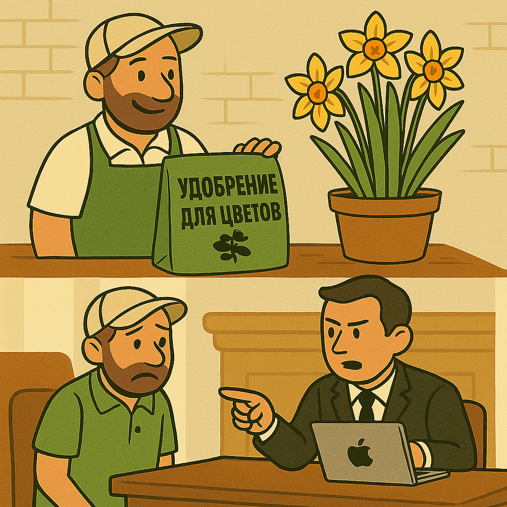
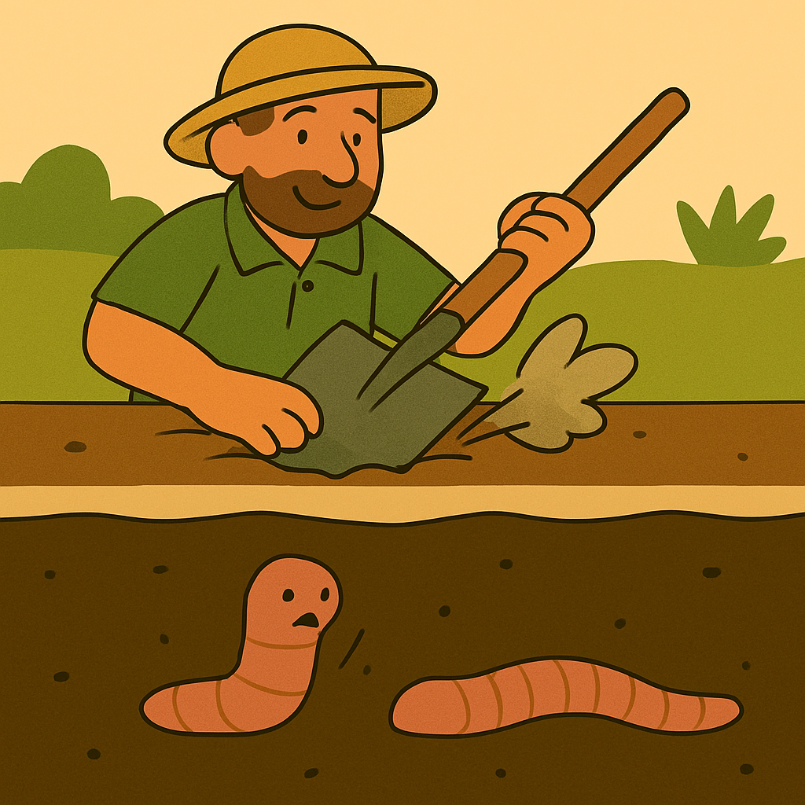
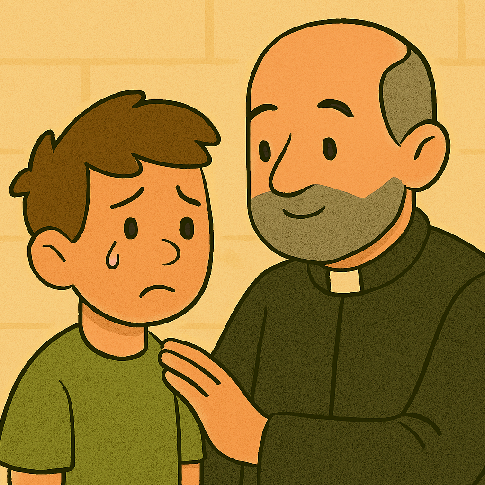
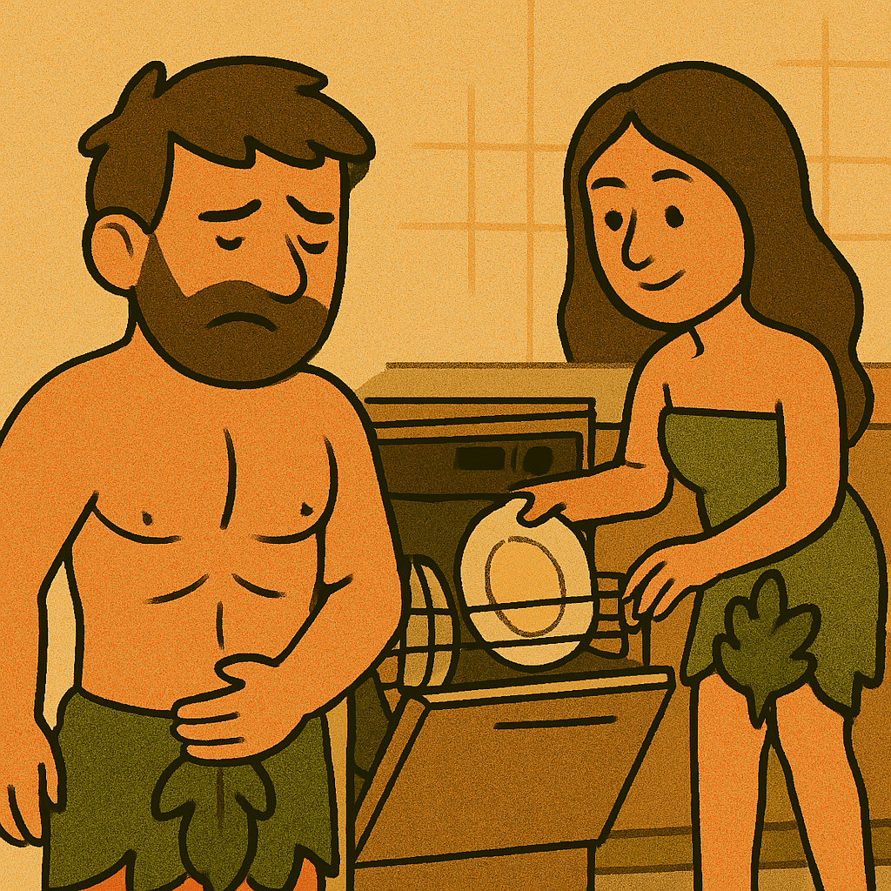
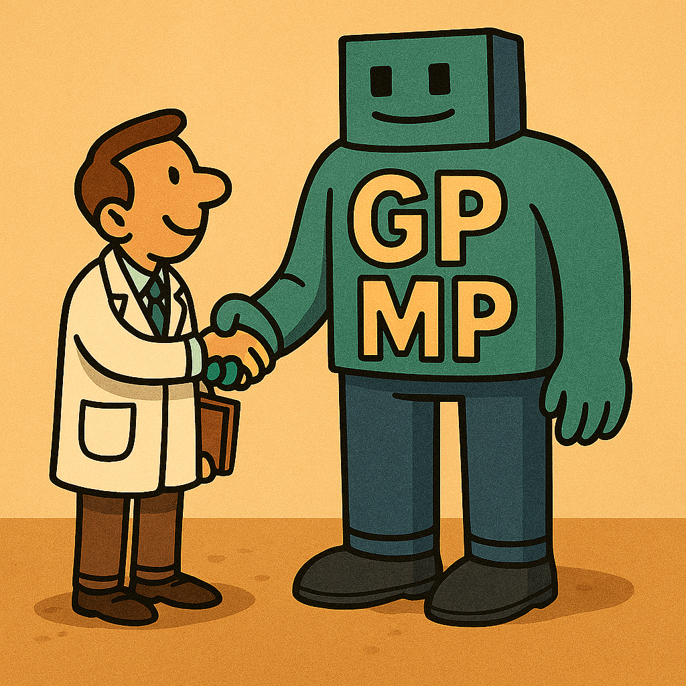
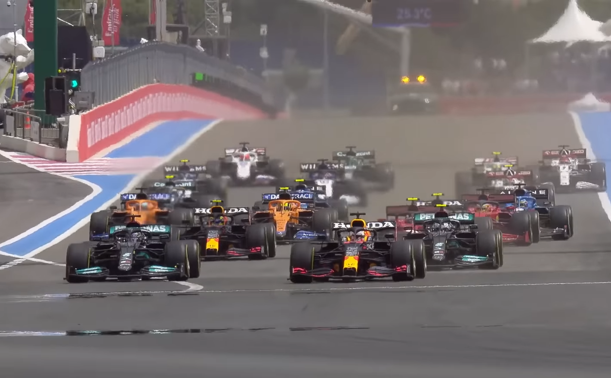
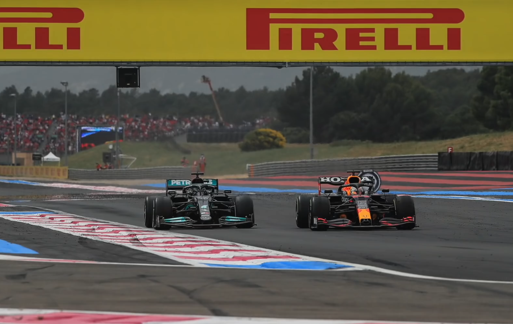

Мой бизнес по продаже цветочных удобрений шёл хорошо... Но Apple подала на меня в суд... У них уже был патент на продажу г()8hа для нарциссов по завышенным ценам.

Жизнь дождевого червя после удара лопатой разделилась на до и ждевого червя.

- Батюшка, почему в интернете все говорят, что тр@*@ли мою маму?
- Не обращай на них внимания, сын мой.

Знаете, чем пришлось пожертвовать человеку, ставшему обладателем первой посудомойки?
Ребром.

Один терапевт - это 1024 гигапевтов и 1024^2 мегапевтов.

F1 Гран-при Франции 2021
На зимних каникулах я решил посмотреть сезон Формулы 1 2021. Начав следить за спортом в 2024 году, я знал о происходящих в том сезоне событиях лишь понаслышке.
Мне захотелось это исправить.
Последним этапом, который я посмотрел на текущий момент, стал Гран-при Франции. Солнечная погода, ветер, температура воздуха 25 градусов цельсия.
Ферстаппен, квалифицировавшийся на поул-позицию уже во втором повороте блокирует шины и теряет лидерство, пропуская вперёд своего основного соперника в битве за титул чемпиона мира - Льюиса Хэмилтона.
Впереди 53 круга борьбы двух пилотов и двух коллективов.
Удастся ли семикратному чемпиону мира сохранить подаренное ему лидерство до конца гонки?
Смогут ли RedBull Racing переиграть Mercedes в стратегии?
Кто из пилотов станет лидером чемпионата по окончании 7-го этапа этого легендарного сезона?


По началу гонка мне показалась скучной. Разменов позициями почти не происходило, начинало казаться, что все 305 оставшихся километров дистанции пройдут просто для галочки, без изменений в первой десятке.
Однако всего через несколько кругов множество пилотов начало жаловаться на ухудшение резины. Сцепление с асфальтом скоращалось значительно быстрее, чем команды ожидали этого.
Уже на 14-ом круге был совершён первый пит-стоп. На этом моменте стало очевидно, что решающую роль в этой гонке сыграет стратегия, которую изберёт каждая из команд.
Множество неожиданностей, длительная погоня и один из лучших обгонов, что я видел, заставили меня изменить своё первоначальное мнение об этом этапе и пристально наблюдать за разрывом между лидерами на последних кругах гонки.
Я рекомендую каждому, кто увлекается Формулой 1, посмотреть этот Гран-при. Вы об этом не пожалеете.
The stewards are saying 'No investigation necessary' on that turn 2 incident, where Max Verstappen went off the track.
So no penalties coming, but it's big penalty, as that he will finish the first lap one and a half seconds behind Lewis Hamilton.
So 1.3 seconds covers the top three in this race.
We see the faces on the pitwall, the pit boards has been hang out for the drivers and the engineers studying the data,
whilst in the cockpit, behind the visor, the gladiator scraping away. Into the chicane we go,
breaking once more from a top speed of round about 200 miles an hour to 85 miles an hour.
| Номер матча | Дата | Время начала | Хозяева | Гости | Итоговый счёт |
|---|---|---|---|---|---|
| 1 | 19.07.2025 | 20:30 | Спартак | Динамо Махачкала | 1 : 0 |
| 2 | 27.07.2025 | 17:30 | Оренбург | Динамо Махачкала | 1 : 1 |
| 3 | 03.08.2025 | 20:30 | Динамо Махачкала | Ахмат | 1 : 0 |